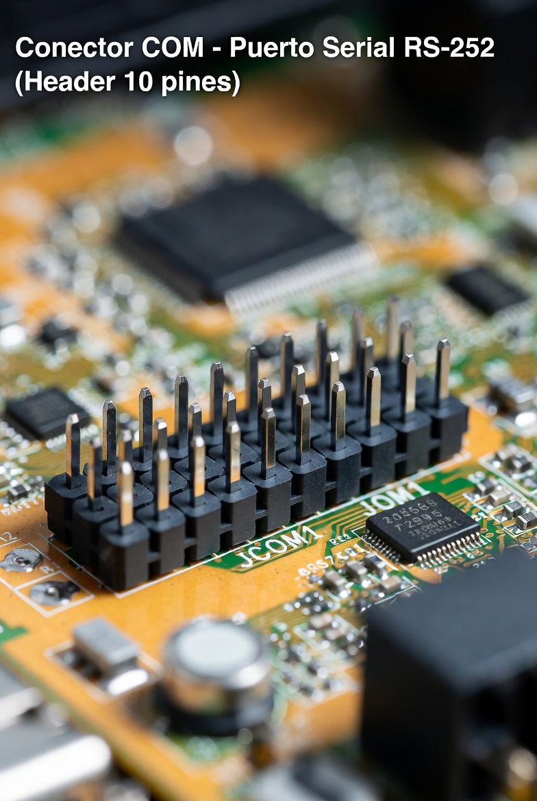
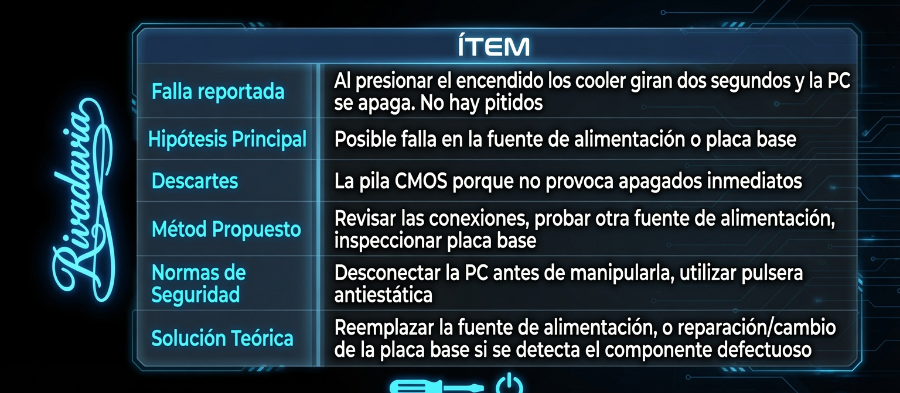
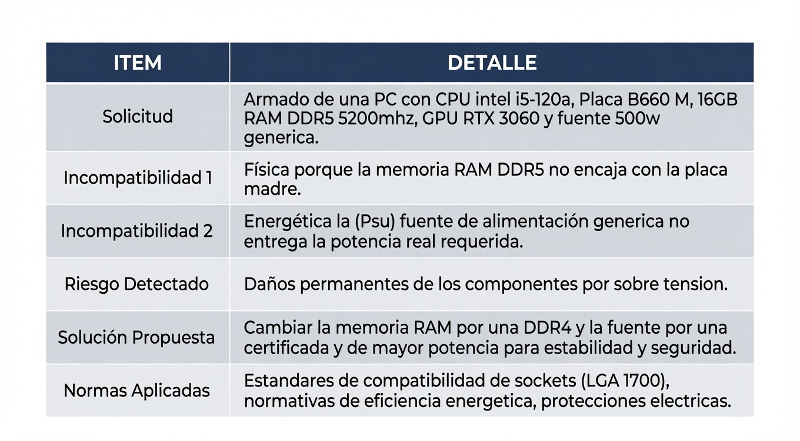

Etapa de Diagnóstico
Clase 1 - Diagnóstico Inicial
Introducción de la actividad diagnóstica realizada durante la primera clase.
Definicion de Sistema Operativo
El sistema operativo (SO) es el software principal que gestiona todos los recursos de hardware y permite la ejecución de aplicaciones en un dispositivo. Actúa como intermediario entre el usuario y la máquina, facilitando tareas como la gestión de memoria, archivos y periféricos.
Diferencia entre memoria RAM y ROM (en pc)
La RAM es la memoria que almacena los datos con los que estás trabajando en ese momento, pero es volátil, lo que significa que en cuanto pierde energía, esos datos desaparecen. ROM se refiere a la memoria permanente. No es volátil, así que cuando pierde energía, los datos permanecen.
2 ejemplos de mantenimmiento prventivo en Software
1-Actualizar el Driver. 2-Realizar una copia de seguridad .
Herramientas de un tecnico
Herramientas manuales y de sujeción:
1. Juego de destornilladores: indispensables, especialmente los kits de precisión con puntas intercambiables (Torx, Phillips y planas).
2. Alicates y pinzas: permiten sujetar, cortar cables o extraer piezas pequeñas en espacios reducidos.
3. Llaves ajustables y llaves Allen: utilizadas para ensamblar y ajustar tornillos o tuercas de distintas medidas.
Herramientas de medición y electricidad:
1. Multímetro o tester: sirve para medir voltajes, continuidad y diagnosticar problemas eléctricos.
2. Soldador y estaño: utilizados para reparar circuitos, unir cables o reemplazar componentes electrónicos.
Herramientas de limpieza y mantenimiento:
1. Aire comprimido o soplador: permite eliminar el polvo acumulado en equipos y componentes delicados.
2. Alcohol isopropílico: ideal para limpiar contactos y placas sin dejar residuos.
3. Pulsera antiestática: previene daños por descargas electrostáticas al manipular componentes sensibles.
Software y herramientas digitales:
1. Unidades USB booteables con sistemas operativos y herramientas de diagnóstico.
2. Programas de acceso remoto para solucionar problemas a distancia sin necesidad de visitar al cliente.
Lo que deberia tener en cuenta antes de actualizar una pc
Antes de actualizar tu PC, lo más importante es verificar la compatibilidad de los componentes, la capacidad de tu fuente de poder, y realizar una copia de seguridad de tus archivos.
Descipcion de BACKUP o copia de seguridad
Un backup o copia de seguridad es una réplica exacta de tus archivos, sistemas o datos almacenados.
Clase 2 - Diagnóstico Complementario
Desarrollo de la segunda actividad diagnóstica.
Division de la placa madre
Puente Norte (Northbridge): es el chip principal y de mayor velocidad. Se encarga de las conexiones de alto rendimiento del sistema, comunicando directamente el procesador (CPU) con la memoria RAM, la tarjeta gráfica y otros componentes esenciales.
Puente Sur (Southbridge): controla los dispositivos de entrada y salida de menor velocidad. Gestiona la comunicación con discos duros, puertos USB, audio integrado, red Ethernet y ranuras de expansión secundarias.
¿por que windows se instala por defecto en la particion C?
Windows se instala por defecto en la partición C: porque, en los primeros PC, las letras A: y B: estaban reservadas para las unidades de disquete. Cuando se empezaron a usar discos duros, el primero recibió la letra C:. Con el tiempo, las disqueteras dejaron de utilizarse, pero la asignación de letras se mantuvo por compatibilidad. Por eso, aún hoy Windows suele instalarse por defecto en la unidad C:.
diferencia entre actualizacion de software y sistema operativo
Una actualización de software consiste en mejorar o corregir un programa específico. Puede incluir correcciones de errores, nuevas funciones, mejoras de rendimiento o parches de seguridad. Por ejemplo, actualizar Google Chrome o Microsoft Word.
Una actualización del sistema operativo modifica el software principal que administra todo el dispositivo. Estas actualizaciones suelen incluir mejoras de seguridad, rendimiento, compatibilidad con hardware y nuevas funciones para el sistema completo. Por ejemplo, actualizar Windows 10 o Windows 11.
Ejemplo:
• Actualizar una aplicación de música = actualización de software.
• Actualizar Windows completo = actualización del sistema operativo.
pasos para preparar un pendrive booteable
Los pasos para preparar un pendrive booteable son:
1. Conseguir un pendrive USB de al menos 8 GB y realizar una copia de seguridad de sus archivos.
2. Descargar la imagen ISO del sistema operativo que se desea instalar.
3. Descargar una herramienta para crear el USB booteable, como Rufus o BalenaEtcher.
4. Conectar el pendrive a la computadora.
5. Abrir la herramienta y seleccionar el pendrive y la imagen ISO.
6. Configurar las opciones recomendadas según el sistema.
7. Iniciar el proceso de grabación y esperar a que finalice.
8. Verificar que el proceso se haya completado correctamente.
9. Expulsar el pendrive de forma segura.
10. Probar el arranque desde el USB para comprobar su funcionamiento.
Al finalizar estos pasos, tendrás un pendrive booteable listo para instalar o ejecutar el sistema operativo elegido.
acceso a la bios para cambiar el orden de arranque
Para acceder a la BIOS o UEFI y cambiar el orden de arranque se deben seguir los siguientes pasos:
1. Guardar el trabajo y cerrar los programas abiertos.
2. Reiniciar o encender la computadora.
3. Presionar repetidamente la tecla correspondiente para ingresar a la BIOS o UEFI (Supr, F2, F10, Esc o F12, según el fabricante).
4. Esperar a que se abra la pantalla de configuración.
5. Buscar el menú llamado Boot, Boot Order o Boot Priority.
6. Revisar el orden actual de los dispositivos de arranque.
7. Seleccionar el dispositivo que se desea priorizar y moverlo a la primera posición.
8. Guardar los cambios mediante la opción Save and Exit o la tecla indicada.
9. Reiniciar el equipo.
10. Verificar que el dispositivo seleccionado inicie correctamente.
Nota: si solo se necesita arrancar una vez desde otro dispositivo, puede utilizarse el Boot Menu sin modificar permanentemente la configuración de la BIOS.
Componentes Internos PC
Placa Madre (Motherboard)
La placa madre es el componente principal de una computadora. En ella se conectan todos los dispositivos internos y permite la comunicación entre cada uno de ellos.
Procesador (CPU)
Es el cerebro de la computadora. Se encarga de procesar datos, ejecutar instrucciones y realizar cálculos.
Memoria RAM
Almacena temporalmente los datos de los programas en uso, permitiendo un acceso rápido a la información.
Disco SSD o HDD
Guarda permanentemente el sistema operativo, programas y archivos del usuario.
Fuente de Alimentación (PSU)
Convierte la corriente eléctrica de la red en energía adecuada para alimentar todos los componentes del equipo.
Tarjeta Gráfica (GPU)
Procesa imágenes, videos y gráficos que se muestran en el monitor.
Tipos de Memoria RAM
Formatos Físicos
- DIMM: utilizada en computadoras de escritorio.
- SODIMM: utilizada en computadoras portátiles.
Tipos de RAM
- DRAM: necesita refrescar sus datos constantemente.
- SRAM: más rápida pero también más costosa.
- SDRAM: sincronizada con el reloj del sistema.
- DDR: transmite datos en ambos ciclos del reloj.
- DDR2: mejora el rendimiento respecto a DDR.
- DDR3: mayor velocidad y menor consumo.
- DDR4: estándar actual durante muchos años.
- DDR5: mayor velocidad y eficiencia energética.
Tipos de Placas Madre
ATX
Es el formato estándar más utilizado en computadoras de escritorio.
Micro-ATX
Versión más compacta de ATX que conserva gran parte de sus funciones.
Mini-ITX
Formato reducido diseñado para equipos compactos.
Diagrama del funcionamiento detallado del ordenador
1 - Entrada de datos
El usuario ingresa datos a través de dispositivos de entrada (teclado, mouse, etc.). Los datos se envían al procesador para su procesamiento.
2 - Procesador (CPU)
Recibe instrucciones y datos del sistema operativo y de los programas. Ejecuta instrucciones y realiza cálculos. Almacena resultados en la memoria RAM.
3 - Memoria RAM
Almacena datos y programas temporalmente mientras el ordenador está encendido. Proporciona acceso rápido a los datos y programas que el procesador necesita.
4 - Disco duro (HDD) o unidad de estado sólido (SSD)
Almacena datos y programas a largo plazo. Proporciona almacenamiento permanente para el sistema operativo, programas y datos.
5 - Tarjeta gráfica
Procesa imágenes y videos para su visualización en la pantalla. Recibe instrucciones del procesador y envía la imagen procesada a la pantalla.
6 - Salida de datos
Los resultados se envían a dispositivos de salida (pantalla, impresora, etc.). El usuario puede ver los resultados en la pantalla o imprimirlos.
7 - Sistema operativo
Gestiona los recursos del ordenador y proporciona una interfaz para el usuario. Coordina la ejecución de programas y el acceso a los dispositivos de hardware.
Conexiones
Procesador → Memoria RAM:
El procesador accede a los datos y programas almacenados en la memoria RAM.
Memoria RAM → Disco duro (HDD) o unidad de estado sólido (SSD):
La memoria RAM carga datos y programas desde el disco duro o SSD.
Procesador → Tarjeta gráfica:
El procesador envía instrucciones a la tarjeta gráfica para procesar imágenes y videos.
Tarjeta gráfica → Pantalla:
La tarjeta gráfica envía la imagen procesada a la pantalla para su visualización.
ovp/uvp
OVP - Over Voltage Protection
Protección contra Sobretensión
- Es el sistema que apaga o desconecta el equipo cuando el voltaje de entrada sube por encima de los límites seguros.
- Actúa principalmente ante picos de tensión o fallas en la red eléctrica.
- Evita daños en componentes sensibles como fuentes de poder, placas base y procesadores.
UVP - Under Voltage Protection
Protección contra Baja Tensión (Subtensión)
- Detecta cuando el voltaje cae por debajo de los valores operativos mínimos.
- Desconecta el dispositivo para evitar que trabaje forzado o inestable.
- Protege contra posibles daños por funcionamiento en condiciones inadecuadas.
mapa conceptual microprocesador

los cables y su informacion

componentes placas-madre
1-bateria CMOS
Alimentación autonoma para el BIOS despues de apagar PC. Ejemplo: CR2032 (CR de litio, 20 de milimetro de litio y 32 de grosor)
2-F_USB1 y F_USB2
conectan puertos USB frontales del gabinete (pendrive)
3-PCI express
conectar tarjetas de videos
4-PCI
conector universal(tarjeta de sonido, de red y otras)
5-Conector TPM
Conecta chip TPM y guarda datos(claves de seguridad)
6-PCIEX
Conectores modernos de alta velocidad(tarjetas de sonido y red)
7-conector COM

Puerto de comunicacion, conecta dsipositivos antiguos y modernos
8-Conector de audio del panel frontal
Admite la conexion de auriculares en gabinete
9-Microcontroladores
controla dispositivos electronicos(controlar teclado)
10-Conectores CPU_FAN,SYS_FAN1(2 Y 3)
Conecta ventiladores del sistema de refrigeracion
11-Conectores externos
USB,HDMI,PS/2,VGA
12-Conector ATX_12V
Duplica cables si el CPU consume mucha corriente y elimina cara del ATX
13-Transitores MOSFET
Controla la cantidad de voltaje que se envia a los componentes
14-Bobinas
Crean la inductancia necesaria(ayuda a regular y estabilizar la corriente en la placa)
15-Capacitores
![]()
Almacena energía y ayuda a estabilizar el voltaje y filtrar la corriente
16-socket
es una ranura en la cual va instalado el CPU
17-Ranuras de memoria DIMM
Conectan la memoria RAM
18-Conector ATX

Conecta la PSU
19-Conector SATA
Conecta disco duro. Transmite informacion
20-Chipset
Se encuentra debajo del disipador, asegura el funcionamiento de los dispositivos
21-Chips M_BIOS Y B_BIOS
BIOS principal que inicia la pc y la otra de repuesto
22 - 23- Conector SATA 2 y SATA 3
Disco duros, unidades de CD, DVD Y SSD
informe tecnico act_1

informe tecnico act_2

informe tecnico act_3

informe tecnico act_4

informe tecnico act_5

informe tecnico act_6